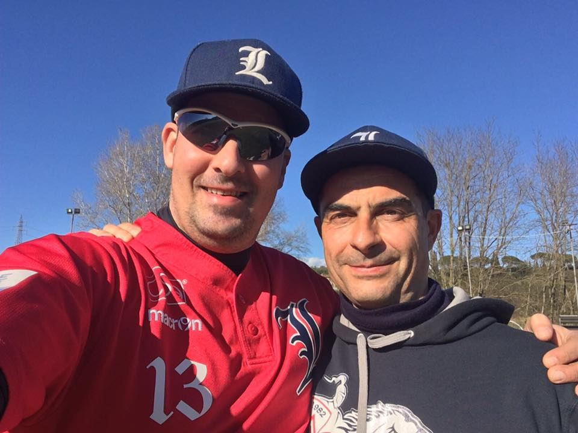

E bravi ai nostri Lancierotti che alla terza uscita stagionale hanno la meglio sui pari categoria labronici.
Partita per niente facile, diciamolo subito!
Il Livorno ha venduto cara la pelle rimanendo in vantaggio per buona parte della gara.
Infatti, nonostante il nostro vantaggio al secondo inning per 5 a 2 siamo stati rimontati al terzo inning per 5 a 7.
Quarto e quinto inning neutri per la differenza punti che hanno portato il parziale sull’8 a 10.
Poi, finalmente, secondo inning da 5 punti per i Lancieri (il sesto).
Parziale a fine sesto 13 – 10: Livorno in attacco….. due out ma basi piene….. grande battuta dei labronici ma che uno straordinario Giulio Cerretelli prende al volo (è la terza partita per Giulio!) e grande festa a bordo e dentro il campo!!!!
Infine…. come si usa da queste parti, che si vinca o che si perda, siamo sempre contenti. Contenti per aver visto una bella partita di baseball. Contenti per aver visto divertirsi dei ragazzi giocare a baseball. Contenti per aver avuto maniera di condividere un bicchiere di qualcosa con la squadra avversaria a termine della partita. Contenti per aver visto tanta gente ai margini del nostro campo. Contenti che tra questa gente ci sia tornato a trovare il nostro Presidentissimo Paolo Moretti il quale ci ha rassicurati sul suo stato di salute.
Poi, t’arriva il solito pesce d’aprile! L’ultima partita si è conclusa malamente per l’infortunio del nostro Gigio. Questa invece per una che “potrebbe” sembrare una brutta notizia. E capita che accendi whatsapp e leggendo i tanti messaggi del gruppo U15 ne trovi uno che “potrebbe” rattristarti! Alessandro Barbieri, per motivi professionali, dice che deve lasciarci e si augura che un domani le nostre strade potranno incontrarsi nuovamente.
Non ha caso abbiamo messo questa foto post. Non a caso, caro Alessandro Barbieri! Il nostro DS Daniele Ciappi ti ha portato qui, hai passato con noi un breve periodo della tua vita, hai conosciuto tutto ciò che il baseball lastrigiano può offrire: dai ragazzini ai superatleti della serie B. Per ognuno hai avuto parole di incoraggiamento durante gli allenamenti. Per ognuno hai avuto un complimento. Per ognuno non ti sei risparmiato certo nell’insegnare. Per ognuno!
E ti sei fatto ben volere da tutti!
Ci ricordiamo ancora il giorno della presentazione del “trio” dei coach degli U15. Sì….adesso te lo possiamo dire: sembravi un po’ cupo, di poche parole; anzi…non ti offendere…sembravi un po’ rospo. Poi, come sempre accade, bisogna conoscerle le persone per giudicarle. E conoscere te è stato semplice, bastava assistere a qualche allenamento per vedere che bella persona che sei!
Abbiamo detto… che questa “potrebbe” sembrare una brutta notizia ma non lo è. Certo, ci dispiace, ma comprendiamo che il lavoro è lavoro. Ci resta molto più difficile farlo capire ai nostri figli perché, credici, tu hai lasciato in loro un grandissimo segno! Un gran bel segno! Pazienza… loro sapranno aspettarti; perché caro Alessandro Barbieri, da queste parti noi ci sappiamo tenere strette certe persone. Non importa tra quanto potrai tornare….noi ti aspetteremo.
Certo, concludiamo sempre dicendo Forza Lancers ma oggi anche Grazie Alessandro Barbieri!